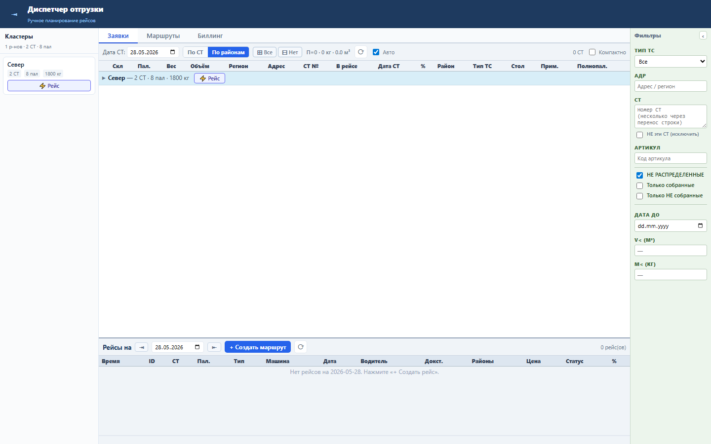
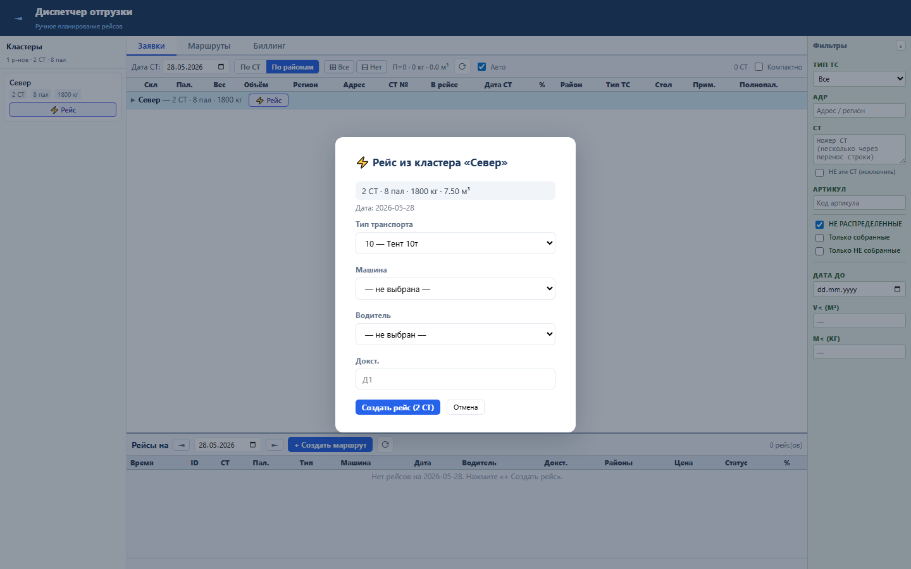

Блок ускоряет полуавтоматическое планирование: диспетчер создаёт рейс из всех свободных СТ выбранного района.
Кластеры строятся по RAION из свободных СТ. Создание вызывает POST /clusters/{raion}/create-task, затем назначает все СТ района в новый рейс.
Диспетчер получает новый рейс с выбранным типом транспорта, машиной, водителем и доком, если они заданы.


Проверка: functional, UI smoke и load gates пройдены.